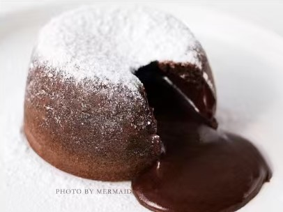
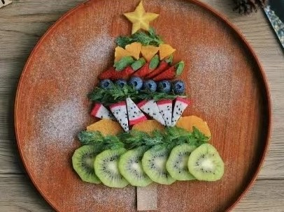
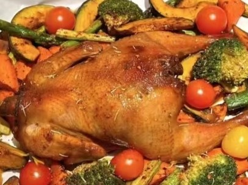

美食星球大冒险
欢迎来到美食星球大冒险！在这个奇幻的世界里，你将探索各种独特的美食和文化。
美食星球地图
我们的美食星球由多个独特的区域组成，每个区域都有其特色美食。
- 巧克力大陆🍫: 这里充满了各种巧克力美食，从巧克力瀑布🍫💦到巧克力蛋糕🍰。了解更多巧克力知识可访问 巧克力网站。
- 水果之岛🍉: 丰富的水果美食，如水果沙拉🥗、水果冰淇淋🍧等。想探索更多水果知识可前往 水果网站。
- 香料王国🌶: 各种奇特的香料搭配出令人惊艳的美食。参考 香料网站了解更多香料知识。
特色美食
以下是一些美食星球的特色美食介绍：
- 巧克力熔岩蛋糕🍫🥧: 浓郁的巧克力蛋糕，内部流淌着热巧克力酱。

- 水果拼盘盛宴🍎🍓🍊: 由各种新鲜水果组成的美丽拼盘。

- 香料烤鸡🌶🍗: 用独特的香料烤制而成，香味扑鼻。

美食达人秀
在美食星球上，有许多美食达人分享他们的烹饪经验和美食故事。
- 美食达人一
- 擅长制作巧克力美食，经常在社交媒体上分享她的创意食谱。（id：鲁卡小宝 from：小红书 粉丝数：35000+）
- 美食达人二
- 水果美食专家，以其精美的水果雕刻和创意水果料理而闻名。（id：樱花马卡龙 from：小红书 粉丝数：94000+）
- 美食达人三
- 喜欢分享香料美食烹饪视频，颇受美食爱好者们喜爱。（id：主厨广坦 from：小红书 粉丝数：1250000+）
美食星球的秘密
美食星球还有许多未被发现的秘密美食等待着你的探索。快来加入我们的冒险吧！